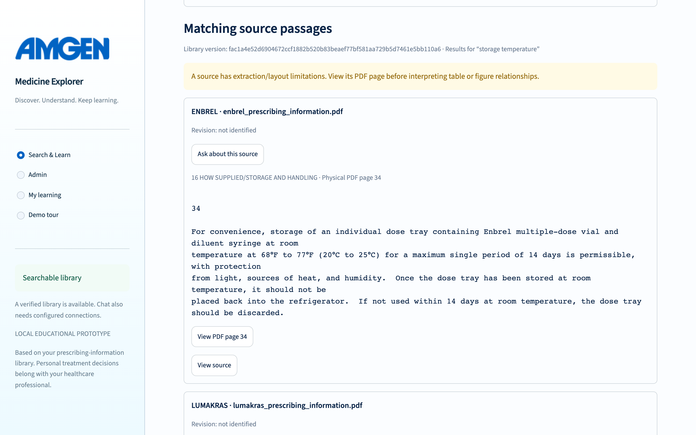
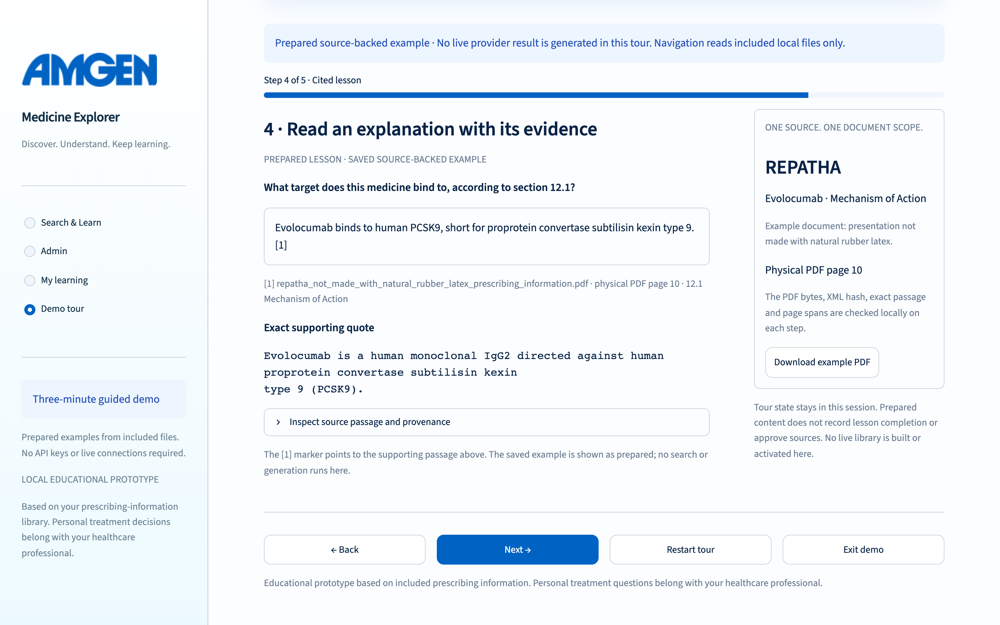
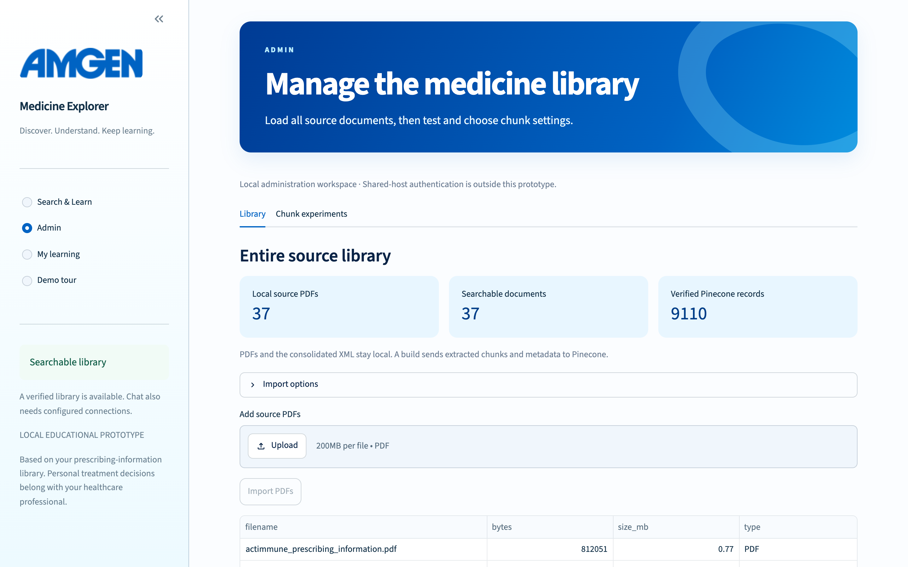
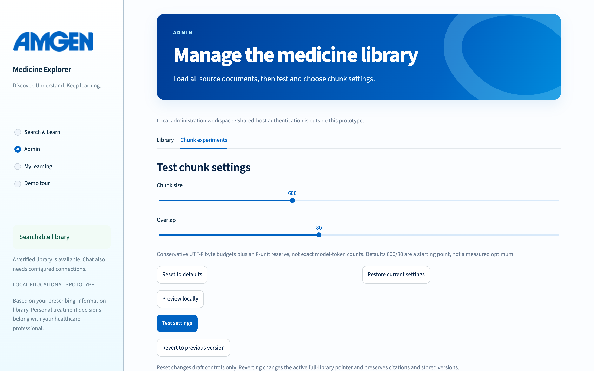

A local RAG app that turns 37 Amgen prescribing-information PDFs into a searchable, citable learning library. It runs hybrid semantic and keyword search across every medicine, shows the exact PDF page behind each passage, and answers questions only with cited evidence from one pinned source.
PyMuPDF reads each PDF; text is verified page by page
One canonical XML with exact character spans per section
Section-aware chunks with medicine and section prefixes
Pinecone (llama-text-embed-v2) and SQLite FTS5, built and activated together
Reciprocal-rank fusion, grouped by medicine and document
OpenAI Responses API explains; each claim is checked against a cited quote



